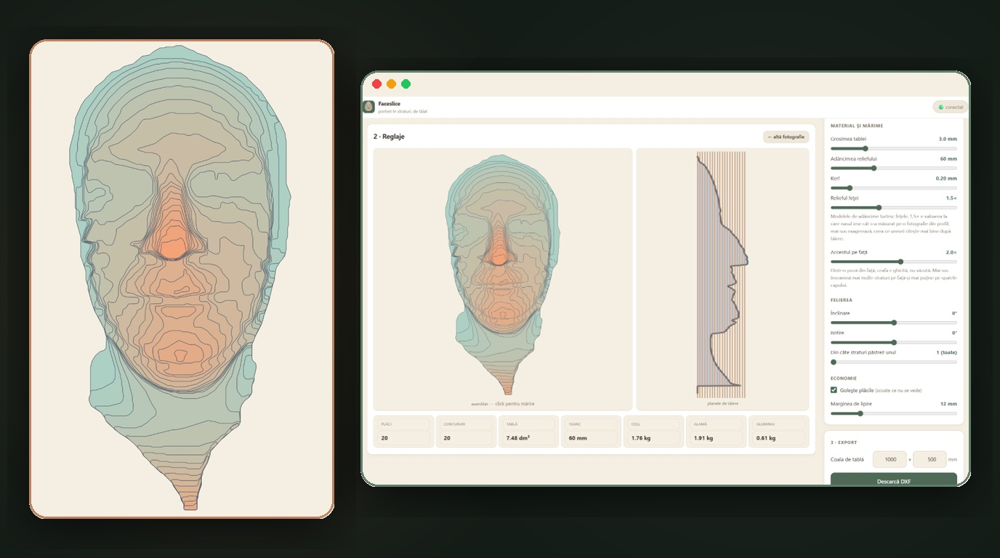
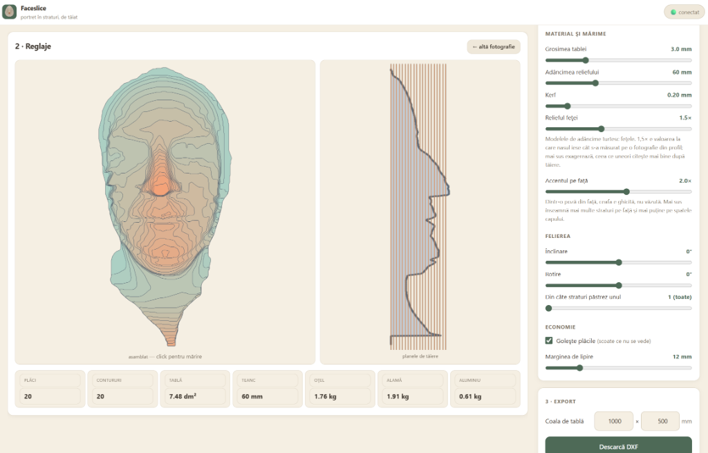
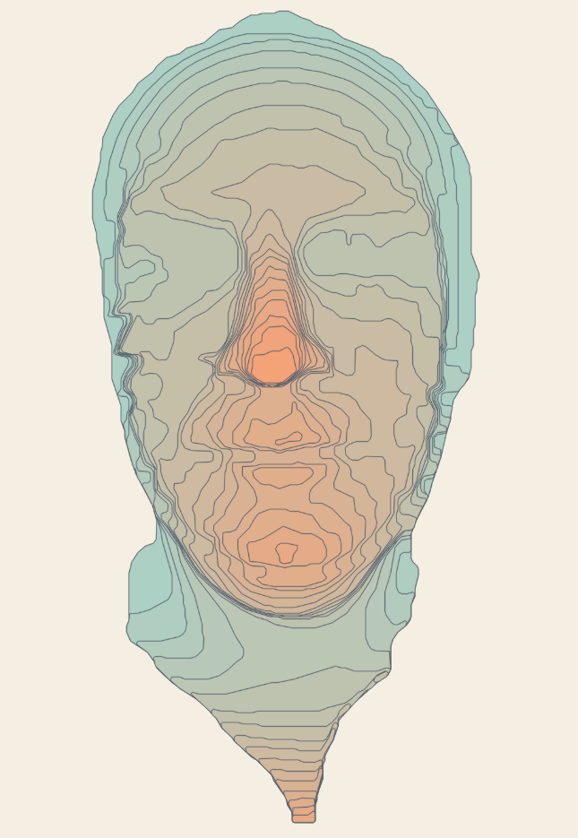
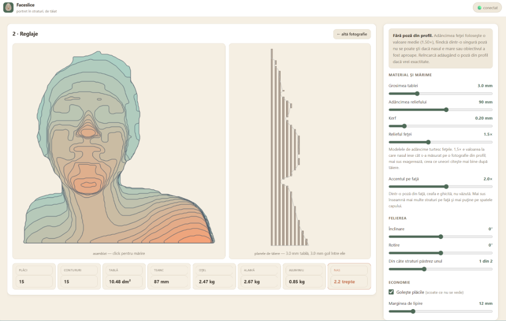
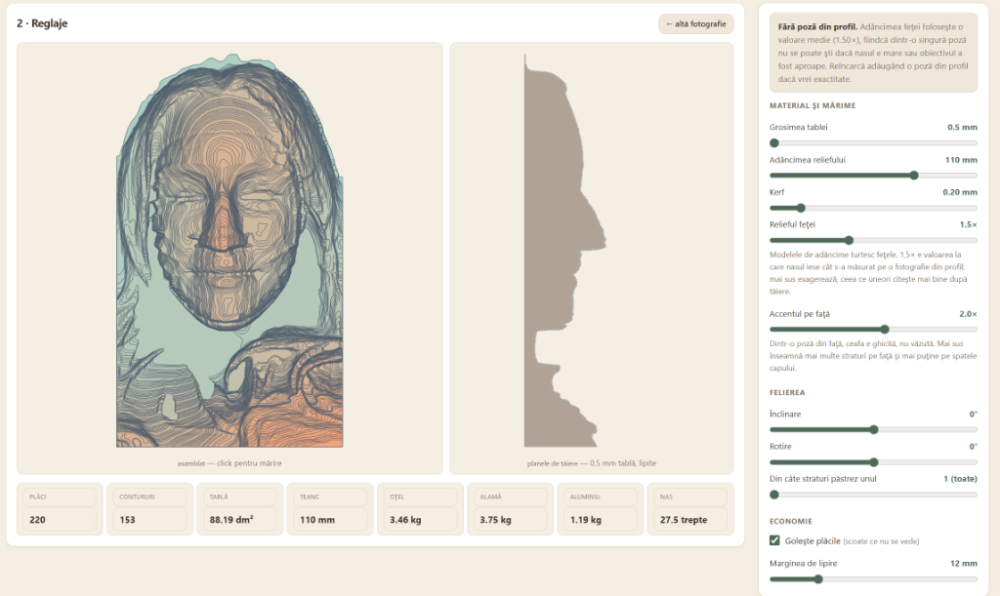
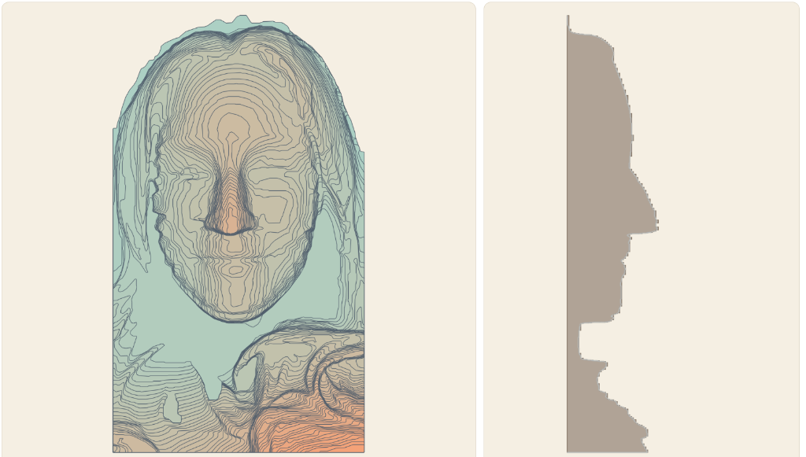

Outils créatifs
Éditeur de diagramme Sankey
Montrez comment les choses circulent. Créez et exportez des diagrammes dans votre navigateur.
Une photo devient un relief 3D, découpé en couches pour créer un portrait métallique.

D’une photo de face aux patrons de découpe d’un portrait en couches : un relief topographique en tôle, collé à la main, couche après couche.
Faceslice transforme une photographie frontale en motifs de découpe pour un relief superposé en tôle ou en papier cartonné. Entrez une distance interpupillaire (IPD) en millimètres pour définir l'échelle. Le résultat est un relief du côté visible de la tête, et non un balayage de la tête entière.
Faceslice combine trois modèles de vision par ordinateur pour estimer le relief : la segmentation trace la silhouette ; la profondeur monoculaire estime un large volume ; et les repères du visage ajoutent des détails autour du nez, des yeux et des lèvres. La géométrie est une estimation à partir d'une seule image.
Le relief est découpé en plans parallèles aux angles réglables. Les tranches frontales s'emboîtent les unes dans les autres, avec des guides d'alignement gravés. L'outil peut supprimer les matériaux intérieurs dissimulés et exporter les feuilles de découpe DXF. Vérifier les dimensions et les réglages de découpe auprès de l'atelier avant fabrication.





JavaScript Vanilla (modules ES), canevas réactif et rendu des contours SVG, curseurs paramétriques en temps réel et architecture PWA compatible hors ligne.
Le moteur Python 3 utilise MediaPipe, ONNX Runtime, NumPy, SciPy et OpenCV. Ses propres modules de géométrie et de DXF préparent les couches et les plans de découpe.
La source comprend une recette de conteneur Podman et des instructions d'exécution locales. Le temps de traitement du processeur dépend de l'image et de la machine. Un déploiement public nécessite HTTPS et un point de terminaison d'administration privé.
Montrez comment les choses circulent. Créez et exportez des diagrammes dans votre navigateur.

Modifiez la gravité et faites pousser un jardin dans un jeu de réflexion paisible fondé sur la physique.

Un endroit pour les pensées, les photos et les notes vocales avant qu’elles ne s’envolent.